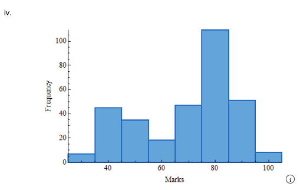
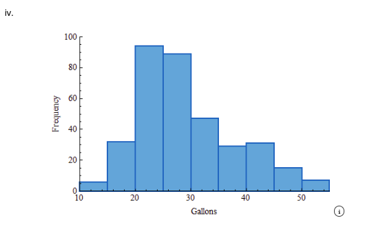
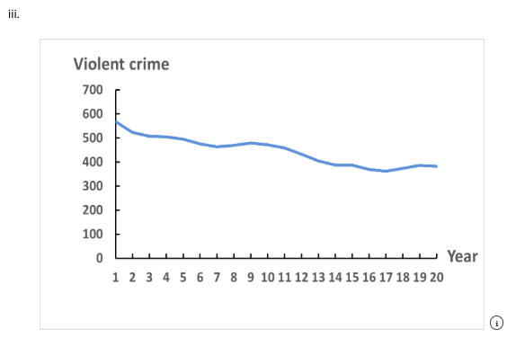
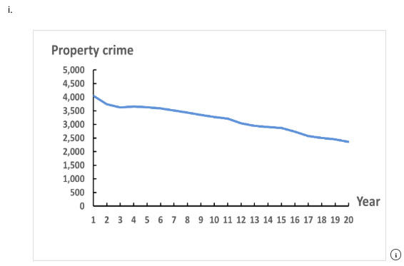
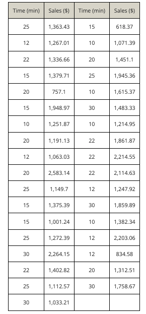
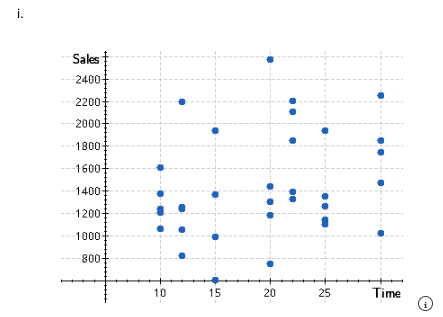
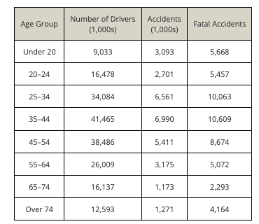
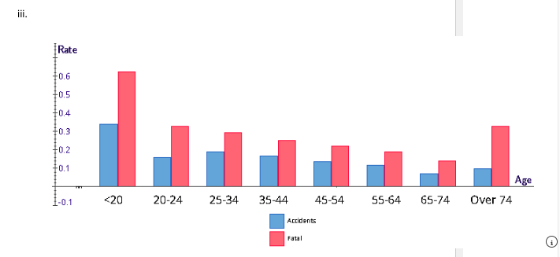
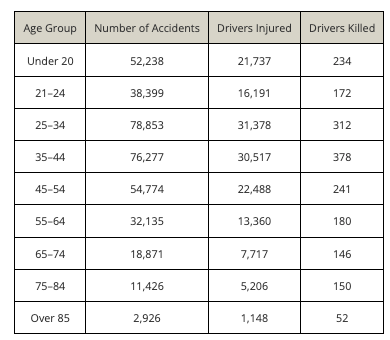
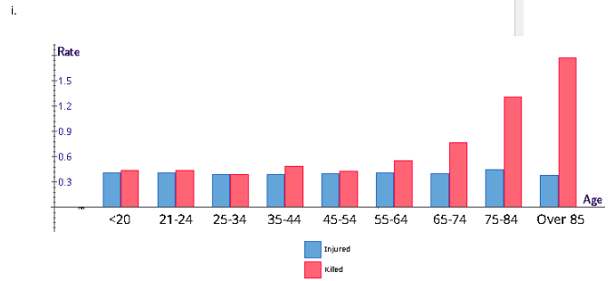

Chapter 3 Assignments
Assignment exercises and answers
Section A: Chapter 3 Assignment
Exercise 03-017 (Graphical Techniques to Describe a Set of Interval Data)
The marks of 320 students on an economics midterm test were recorded. Use a graphical technique to summarize these data.
Select the correct graph.

Correct Answer: iv
What does the graph tell you?
The histogram is negatively skewed, bimodal, and is not bell shaped.
Exercise 03-021 (Graphical Techniques to Describe a Set of Interval Data)
The volume of water used by each of a sample of 350 households was measured (in gallons) and recorded. Use a suitable graphical statistical method to summarize the data.
Select the correct graph.

Correct Answer: iv
What does the graph tell you?
The histogram is positively skewed and unimodal. Most households use between 20 and 45 gallons per day. The center of the distribution appears to be around 25 to 30 gallons.
Exercise 03-056 (Describing Time-Series Data)
The numbers of violent crimes and the numbers of property crimes for the years 1998 to 2017 were recorded.
(a) Calculate the violent crime and property crime rates per 100,000 of population.
| Year | Violent Crime Rate | Property Crime Rate |
|---|---|---|
| 1998 | 567.585 | 4052.510 |
| 1999 | 522.953 | 3743.556 |
| 2000 | 506.530 | 3618.263 |
| 2001 | 504.519 | 3658.096 |
| 2002 | 494.377 | 3630.633 |
| 2003 | 475.835 | 3591.217 |
| 2004 | 463.156 | 3514.097 |
| 2005 | 469.043 | 3431.539 |
| 2006 | 479.335 | 3346.577 |
| 2007 | 471.774 | 3276.366 |
| 2008 | 458.614 | 3214.550 |
| 2009 | 431.879 | 3041.323 |
| 2010 | 404.502 | 2945.921 |
| 2011 | 387.051 | 2905.358 |
| 2012 | 387.754 | 2868.030 |
| 2013 | 369.133 | 2733.636 |
| 2014 | 361.554 | 2574.105 |
| 2015 | 373.737 | 2500.530 |
| 2016 | 386.561 | 2451.572 |
| 2017 | 382.944 | 2362.184 |
(b) Draw a line chart of the violent crime rate per 100,000 of population.

Correct Answer: iii
(c) Draw a line chart of the property crime rate per 100,000 of population.

Correct Answer: i
(d) Describe your findings.
Violent crimes have steadily decreased in this time frame. Property crimes have steadily decreased in this time frame.
Exercise 03-085 Algo (Describing the Relationship between Two Interval Variables)
A movie theater manager speculated that the longer the time in minutes between showings of a movie, the greater the sales of concession items. To acquire more information, the manager varied the amount of time between movie showings and recorded the sales.

(a) Draw a scatter diagram of the relationship between sales and time between movie showings.

Correct Answer: i
(b) Is there a positive relationship between the two variables?
There is no apparent relationship between time between showings of a movie and sales of concession items.
Exercise 03-101 Algo (Art and Science of Graphical Presentations)
To determine premiums for automobile insurance, companies must have an understanding of the variables that affect whether a driver will have an accident. The age of the driver is one important variable.

(a) Calculate the accident rate (per driver) and the fatal accident rate (per 1,000 drivers) for each age group.
| Age Group | Accident Rate | Fatal Accident Rate |
|---|---|---|
| Under 20 | 0.342 | 0.628 |
| 20–24 | 0.164 | 0.331 |
| 25–34 | 0.192 | 0.295 |
| 35–44 | 0.169 | 0.256 |
| 45–54 | 0.141 | 0.223 |
| 55–64 | 0.122 | 0.195 |
| 65–74 | 0.073 | 0.142 |
| Over 74 | 0.101 | 0.331 |
(b) Graphically depict the relationship between the ages of drivers, their accident rates, and their fatal accident rates (per 1,000 drivers).

Correct Answer: iii
(c) Briefly describe what you have learned.
Correct Answer: ii
As age increases, the accident rate generally decreases. As age increases, the fatal accident rate decreases until the over 74 age category where there is an increase.
Exercise 03-102 Algo (Art and Science of Graphical Presentations)
In one year in a state, a total of 365,899 drivers were involved in car accidents. The table breaks down this number by age group and whether the driver was injured or killed.

(a) Calculate the injury rate (per accident) and the death rate (per 100 accidents) for each age group.
| Age Group | Drivers Injured | Drivers Killed |
|---|---|---|
| Under 20 | 0.4161 | 0.448 |
| 21–24 | 0.4217 | 0.448 |
| 25–34 | 0.3979 | 0.396 |
| 35–44 | 0.4001 | 0.496 |
| 45–54 | 0.4106 | 0.440 |
| 55–64 | 0.4157 | 0.560 |
| 65–74 | 0.4089 | 0.774 |
| 75–84 | 0.4556 | 1.313 |
| Over 85 | 0.3923 | 1.777 |
(b) Graphically depict the relationship between the ages of drivers, their injury rate (per accident), and their death rate (per 100 accidents).

Correct Answer: i
(c) Briefly describe what you have learned from these graphs.
Correct Answer: ii